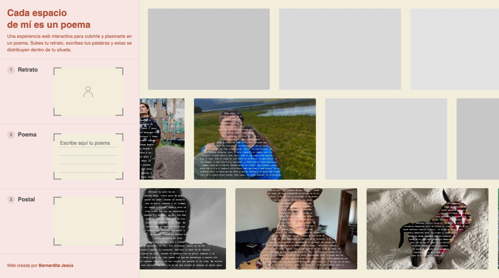
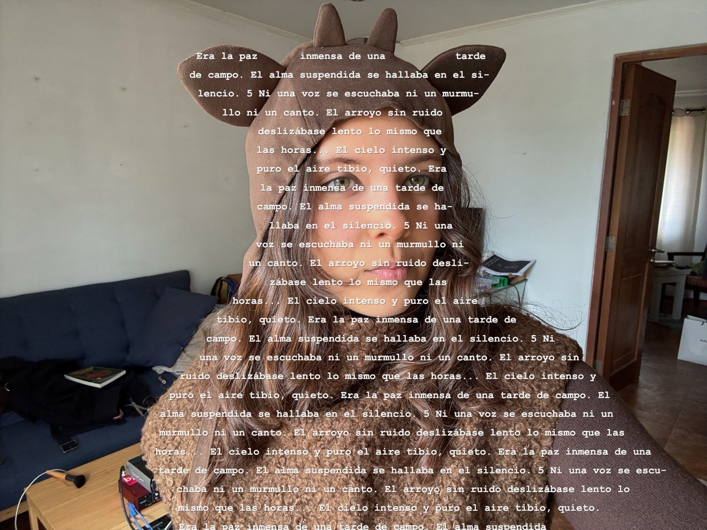

← Volver a proyectos
Cada espacio de mí
Web · Poesía visual · Efecto visual · 2026
Cada espacio de mí
es un poema
Web · Poesía visual · Efecto visual · 2026
Esta web surge de la necesidad de impregnarme visualmente de la poesía. Tras una serie de autorretratos, realizados como práctica y ejercicio de autoobservación, desarrollé una propuesta visual que luego programé en p5.js y convertí en una página web, pensada como una herramienta para esconderme y refugiarme bajo la poesía.

Quienes usan la web pueden crear su propio retrato y compartirlo como postal. Cada postal compartida se puede recorrer y girar; en su reverso aparecen el poema, quién lo envió y desde dónde.

Era la paz inmensa
de una tarde de campo.
El alma suspendida
se hallaba en el silencio.
Ni una voz se escuchaba
ni un murmullo ni un canto.
El arroyo sin ruido
deslizábase lento
lo mismo que las horas...
El cielo intenso y puro
el aire tibio, quieto.
Poema por: Idea Vilariño
DeBernardita Jesús
DesdeSantiago, Chile
FechaSábado 31 de octubre, primavera 2026
Arrastra la postal para moverla, o tócala para darla vuelta.